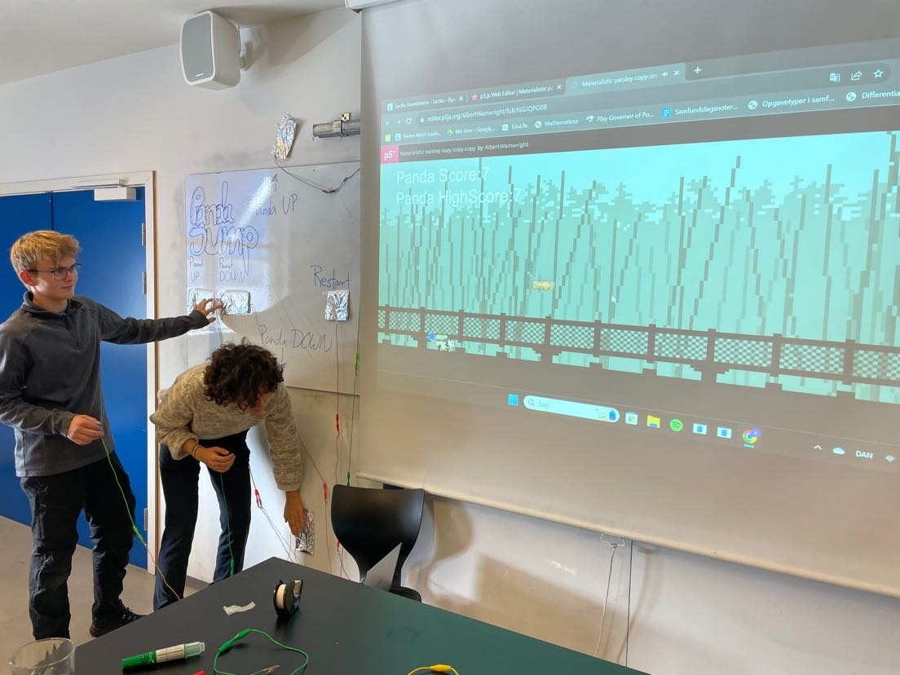
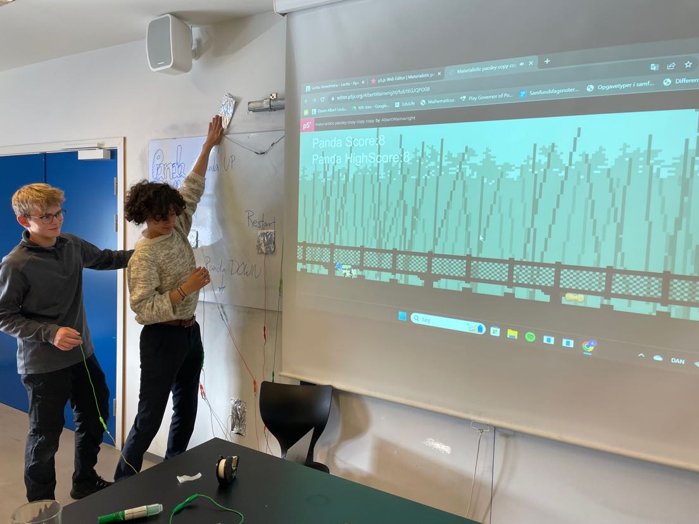
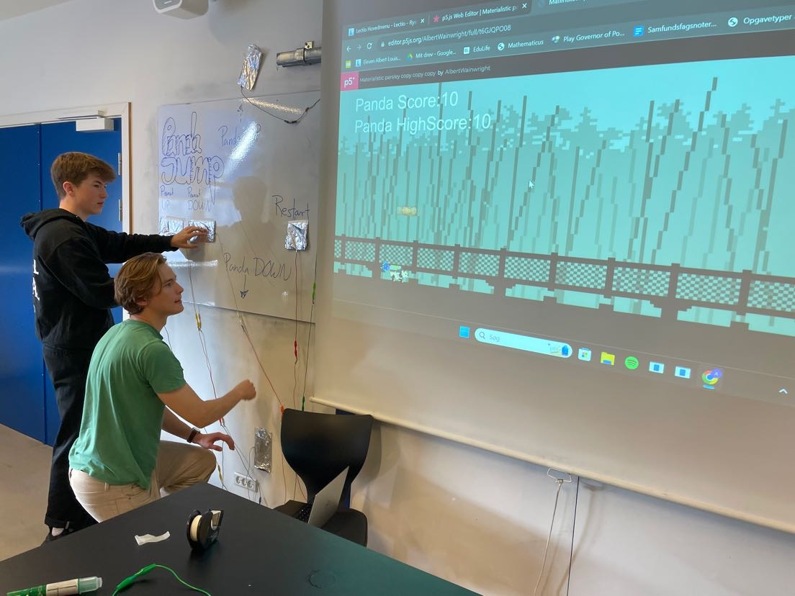
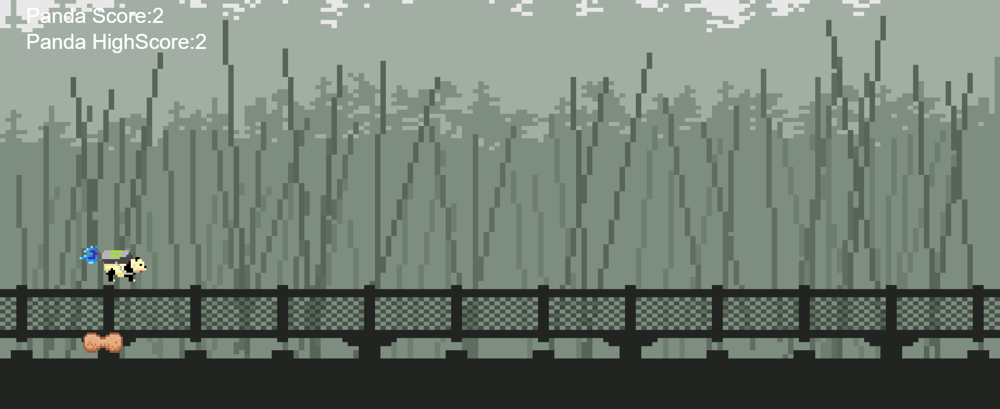
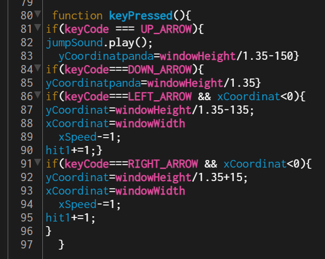

Projekt - Pandagame
Problem
Vi skal skabe et spil, til unge, der skal kunne spilles sammen af min 2 personer, på samme komputer.
Spillet skal involverer samarbejde/konkurrence og styres af makey makey.
Hvordan løser vi problemet
- Vores program er til unge i det at det inkorpererer computerspil med bevægelse
- Vores program spilles af 2 personer der er sammen
- Vores program gør brug af en Makey-makey



Se spillet her
Her ses et uddrag fra midten af spillet, med karakteren (pandaen) der hopper over peanutten

Eksempel på kode

- 1. Se om der bliver trykket på UP_ARROW, hvis dette ikke er gældene så gå videre til punkt 4
- 2. Afspil JUMPSOUND
- 3. Ændre Pandaens ykoordinat til at være højere
- 4. Se om der bliver trykket på DOWN_ARROW, hvis dette ikke er gældene så gå videre til punkt 6
- 5. Ændre pandaens ykoordinat til at være lavere
- 6. Se om der bliver trykket på LEFT_ARROW, hvis dette ikke er gældene så gå videre til punkt 11
- 7. Ændre peanuttens ykoordinat til at være på kurs mod Pandaens når den er oppe
- 8. Ændre peanuttens xkoordinat til at være i den højre side af skærmen
- 9. Sæt peanuttens xSpeed til at være 1 højere
- 10. Sæt skoren til at være 1 højere
- 11. Se om der bliver trykket på RIGHT_ARROW, hvis dette ikke er gældene så gå videre til punkt 16
- 12. Ændre peanuttens ykoordinat til at være på kurs mod Pandaens når den er nede
- 13. Ændre peanuttens xkoordinat til at være i den højre side af skærmen
- 14. Sæt peanuttens xSpeed til at være 1 højere
- 15. Sæt skoren til at være 1 højere
- 16. ellers sker der intet
Links til projekt-undersider
Tilbage til hovedsiden
Projektbeskrivelse webteknologier
Billedemanipulation
Selvkørende bil